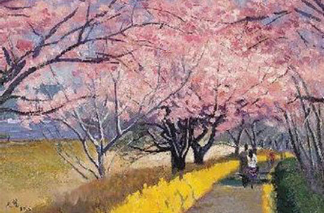

你的审美性格画像：樱花
距离产生美，这句话最适合你。现实中只有远离和孤独才能让自己待在舒适区，也让你在美学上相当清高和孤寒。

距离产生美，这句话最适合你。现实中只有远离和孤独才能让自己待在舒适区，也让你在美学上相当清高和孤寒。
符合你品位的艺术家也往往是悲剧色彩浓郁的天才，比如莫里迪阿尼、郁特里罗还有华人骄子常玉。
匹配你的美也许不那么正能量却一定从不缺少能量。这也造就了你品位不俗的同时，还有几分邪魅气质。事实上你虽然不喜欢主动，但你很容易影响周围人的审美。
那些众人眼里过时的美学载体和形式，在善于积累的你这里，总会焕发出被岁月淬炼之后历久弥新的价值。对怀旧艺术情有独钟的你，现实中也总是给人以活在旧时光里的感觉。
你非常适合成为专家，但也要注意接受吸收新事物，要有意识去了解而不是屏蔽那些“看起来就没营养的”新鲜事。
开创美术新方向的画家、雕刻家。他是游离于所有时髦流派之外的独行者，又与新艺术观念关系紧密。
中国式的莫迪利阿尼，同时又是一个为自己艺术信仰而自由创作、成就斐然的绘画大家。
*请注意，审美性格原则上没有优劣高低，本测试旨在帮助测试者认识自己，从而能在特定场景做出更有效率的消费选择。